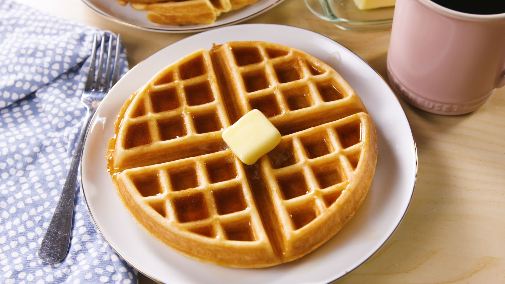

Classic Waffles

Description
Kickin Waffles that perfectly replicate that saturday morning vibe
Ingredients
- 7 ounces unsalted butter, at room temperature
- 6 tablespoons white sugar
- 2 teaspoons vanilla sugar
- 1 pinch salt
- 6 eggs
- 2 ½ cups all-purpose flour
- 2 teaspoons baking powder
- ⅞ cup heavy whipping cream
- 1 (1.5 fluid ounce) jigger sparkling water, or as needed
- cooking spray
Steps
- Preheat a waffle iron according to manufacturer's instructions.
- Combine butter, sugar, vanilla sugar, and salt in a large bowl; beat with an electric mixer until smooth and creamy. Add eggs one at a time, beating well after each addition.
- Combine flour and baking powder in a bowl. Beat into butter mixture 1/2 cup at a time, alternating with cream. Add a dash of sparkling water in the end to loosen up the batter.
- Spray the preheated waffle iron with cooking spray. Pour batter into waffle iron, working in batches, and cook according to manufacturer's instructions, 3 to 5 minutes per waffle.
Return to Home